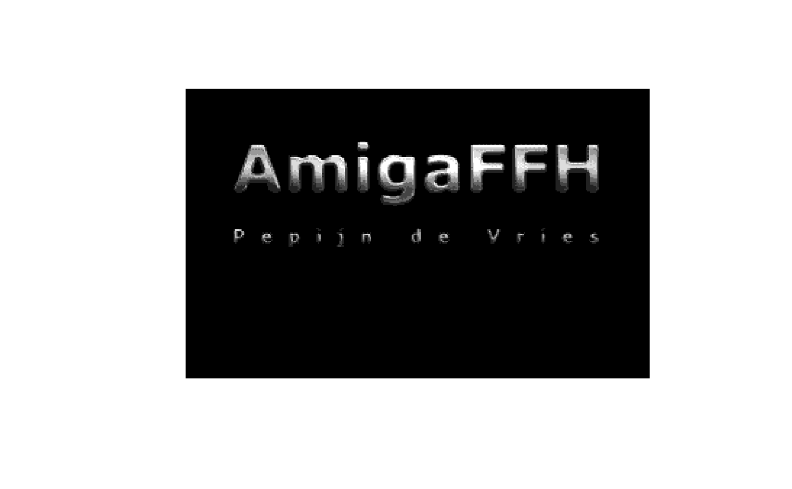

Amiga images are usually stored as bitmap images with indexed colours. This
function converts raw Amiga bitmap data into raster data
(grDevices::as.raster()).
Arguments
- x
a
vectorofrawvalues, representing bitmap data.- w
Width in pixels of the bitmap image. Can be any positive value. However, bitmap data is `word' aligned on the amiga. This means that the width of the stored bitmap data is a multiple of 16 pixels. The image is cropped to the width specified here.
- h
Height in pixels of the bitmap image.
- depth
The colour depth of the bitmap image (i.e., the number of bit planes). The image will be composed of
2^depthindexed colours.- palette
A
vectorof2^depthcolours, to be used for the indexed colours of the bitmap image. By default, a grayscale palette is used. When explicitly set toNULL, this function returns a matrix with palette index values.- interleaved
A
logicalvalue, indicating whether the bitmap is interleaved. An interleaved bitmap image stores each consecutive bitmap layer per horizontal scanline.
Value
Returns a raster object (as.raster()) as specified in
the grDevices() package. Unless, palette is set to NULL,
in which case a matrix with numeric palette index values is returned.
Details
Bitmap images stored as raw data, representing palette index colours, can
be converted into raster data (grDevices::as.raster()). The latter
data can easily be plotted in R. It is usually not necessary to call this function
directly, as there are several more convenient wrappers for this function. Those
wrappers can convert specific file formats (such as IFF ILBM and Hardware Sprites,
see as.raster()) into raster objects. This function is
provided for completeness sake (or for when you want to search for images in an
amiga memory dump).
See also
Other raster.operations:
AmigaBitmapFont,
as.raster.AmigaBasicShape(),
dither(),
index.colours(),
rasterToAmigaBasicShape(),
rasterToAmigaBitmapFont(),
rasterToBitmap(),
rasterToHWSprite(),
rasterToIFF()
Examples
## first load an example image:
example.iff <- read.iff(system.file("ilbm8lores.iff", package = "AmigaFFH"))
## get the raw bitmap data, which is nested in the InterLeaved BitMap (ILBM)
## IFF chunk as the BODY:
bitmap.data <- interpretIFFChunk(getIFFChunk(example.iff, c("ILBM", "BODY")))
## In order to translate the bitmap data into a raster object we need
## to know the image dimensions (width, height and colour depth). This
## information can be obtained from the bitmap header (BMHD):
bitmap.header <- interpretIFFChunk(getIFFChunk(example.iff, c("ILBM", "BMHD")))
## First the bitmap data needs to be unpacked as it was stored in a compresssed
## form in the IFF file (see bitmap.header$Compression):
bitmap.data <- unPackBitmap(bitmap.data)
## It would also be nice to use the correct colour palette. This can be obtained
## from the CMAP chunk in the IFF file:
bitmap.palette <- interpretIFFChunk(getIFFChunk(example.iff, c("ILBM", "CMAP")))
example.raster <- bitmapToRaster(bitmap.data,
bitmap.header$w,
bitmap.header$h,
bitmap.header$nPlanes,
bitmap.palette)
## We now have a raster object that can be plotted:
plot(example.raster, interpolate = FALSE)
